Preferences settings that affect Edit behavior
-
 Enable cut lines (unchecked by default)
Enable cut lines (unchecked by default)
- When this setting is enabled, cutting a section of audio will leave a red vertical line at the left edge of the cut portion. You can click on this line at any time to restore the cut audio.
-
 Editing a clip can move other clips (checked by default)
Editing a clip can move other clips (checked by default)
This page provides details and examples of how these preference settings affect editing operations.
Contents
Editing a clip can move other clips
If this setting is enabled (the default setting is "on") and the track has been split into more than one clip, any clips following to the right of the edit point can always move as necessary in response to pasting, cutting, deleting or other change that adds or removes content.
Unchecking this preferences "pins" clips so that they cannot move in response to an edit in another clip. When removing content, any following clips will not move back. When pasting, an error message will display if there is not enough room to paste without moving the following clips.
Examples of the effect of changing "Editing a clip can move other clips"
Removing audio (Cut or Delete) shifts the audio to the right of the edit to close up the space
- 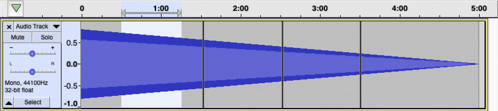
After the cut or delete with  Editing a clip can move other clips turned "on" - clips to the right of the edit move left
Editing a clip can move other clips turned "on" - clips to the right of the edit move left
- 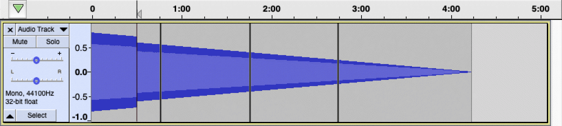
After the cut or delete with  Editing a clip can move other clips turned "off" - audio to the right of the edit within the clip moves left, clips to the right of edited clip do not move
Editing a clip can move other clips turned "off" - audio to the right of the edit within the clip moves left, clips to the right of edited clip do not move
- 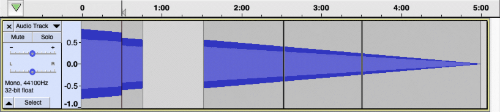
Pasting into a region selection removes the region and inserts the clipboard contents, adjusting the position of the following audio as needed and if allowed
- 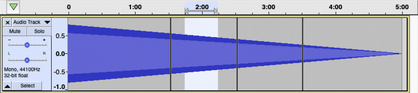
After the paste when the audio to be pasted is shorter than the selection with  Editing a clip can move other clips - audio to the right of the edit moves left
Editing a clip can move other clips - audio to the right of the edit moves left
- 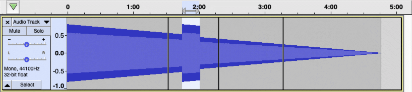
After the paste when the audio to be pasted is shorter than the selection with  Editing a clip can move other clips - audio to the right of the edit within the clip moves left, clips to the right of the edited clip do not move
Editing a clip can move other clips - audio to the right of the edit within the clip moves left, clips to the right of the edited clip do not move
- 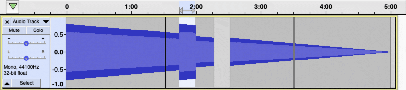
After the paste when the audio to be pasted is longer than the selection with  Editing a clip can move other clips - audio to the right of the edit moves right to make room for the longer region of audio
Editing a clip can move other clips - audio to the right of the edit moves right to make room for the longer region of audio
- 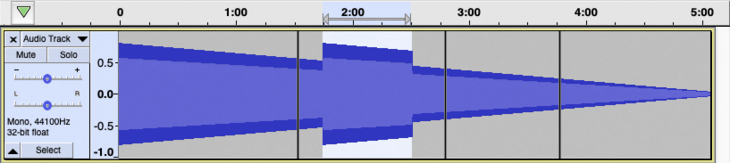
After the paste when the audio to be pasted is longer than the selection with  Editing a clip can move other clips - the clips to the right of edit cannot move, so the paste is not allowed
Editing a clip can move other clips - the clips to the right of edit cannot move, so the paste is not allowed
- 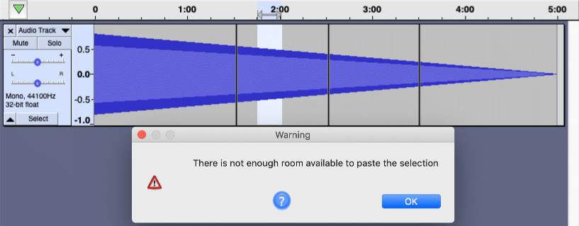
Pasting into a point selection inserts the audio at that point and adjusts the position of the following audio
- 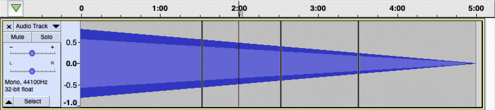
After the paste into a point selection with  Editing a clip can move other clips - audio to the right of the edit moves right to make room for the longer region of audio
Editing a clip can move other clips - audio to the right of the edit moves right to make room for the longer region of audio
- 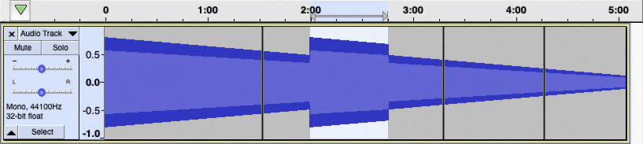
After the paste into a point selection with  Editing a clip can move other clips - the clips to the right of edit cannot move, so the paste is not allowed
Editing a clip can move other clips - the clips to the right of edit cannot move, so the paste is not allowed
- 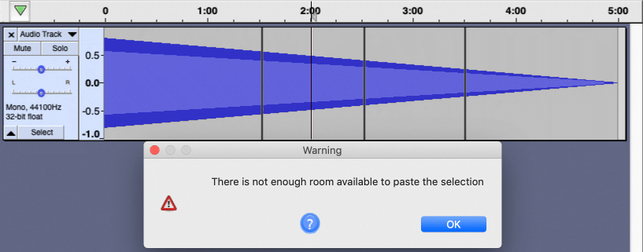
Enable Cut Lines
When this setting is enabled (the default setting is "off"), cutting a section of audio will leave a red vertical line at the left edge of the cut portion. You can click on this line at any time to restore the cut audio. If you restore in error, use to get the cut line back. To remove the line without restoring audio, right-click over it. will restore the line if you make a mistake.
You can think of this as a kind of "persistent undo" in that clicking on the cut line undoes the cut, and the cut lines persist when you close and later re-open the project.
|
Examples of using Cut lines
Creating and restoring cut lines
- Enable cut lines
- Editing a clip can move other clips
Before cutting a region of audio from the first clip

After cutting the region - note the red indication of the cut line
- 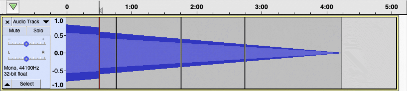
Two more cuts are made
- 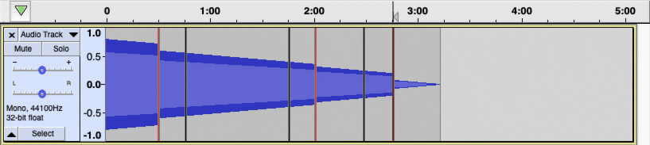
We can now expand the first cut - without the use of cut lines one would have to Undo three times to get the first cut back, then redo the second and third cuts
- 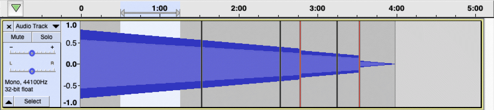
Cut lines cannot be expanded if doing so would violate the "Editing a clip can move other clips" setting
- Enable cut lines
- Editing a clip can move other clips
Before cutting a region from the first clip
- 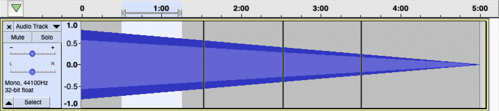
After cutting the region, then moving the second clip to the left so it touches the first clip
- 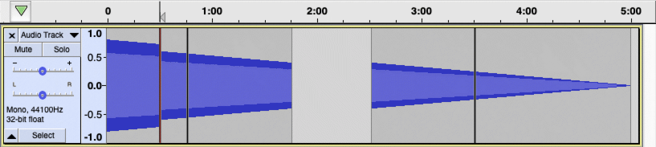
After attempting to expand the cut line
- 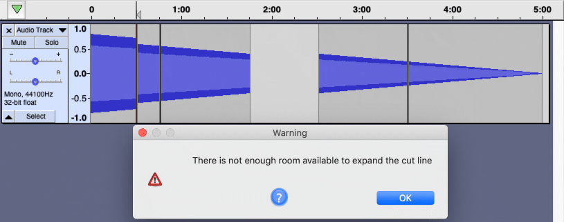
Cut lines are not created if one or both edges of the region coincide with a clip boundary
- Enable cut lines
- Editing a clip can move other clips
Before cutting a region from the second clip - note that the left edge of the selection coincides with the left clip boundary
- 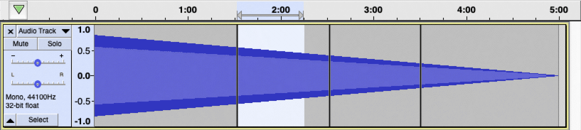
After cutting the region - note that there is no cut line
- 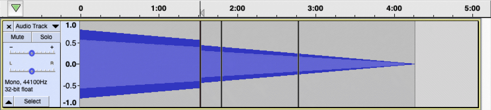